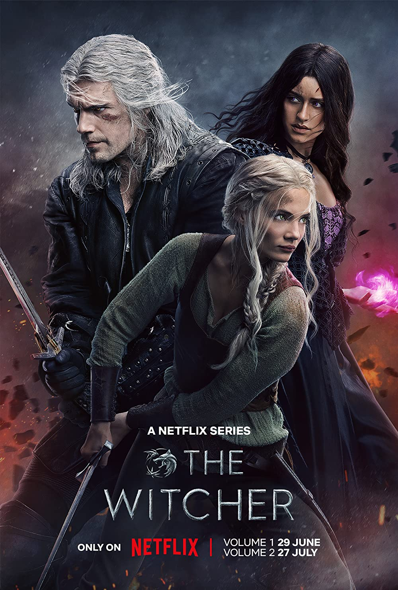

Witcher
More Information
See this movie on IMDbSummary:
"The Witcher" is a fantasy drama television series that premiered on Netflix in 2019. The show is based on the book series by Andrzej Sapkowski and follows the adventures of Geralt of Rivia, a solitary monster hunter known as a Witcher, in a medieval-inspired world known as The Continent.
Geralt, portrayed by Henry Cavill, roams the land seeking out and slaying dangerous creatures for coin. As he travels, he becomes entangled in the political and magical conflicts of the world, encountering sorceresses, mages, and destiny-driven individuals.
The show also follows the stories of Ciri, a young princess with a mysterious power, and Yennefer, a powerful sorceress with a complex past. As their paths converge, the three protagonists' destinies become intertwined, leading to epic battles and surprising revelations.
"The Witcher" is praised for its dark and gritty atmosphere, well-choreographed action scenes, and Henry Cavill's portrayal of the brooding and enigmatic Geralt. The show's complex characters, intricate world-building, and intriguing plot twists have made it a hit among fantasy enthusiasts and fans of the original book series and video games.